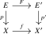
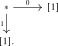

We will need one further formal property of cartesian fibrations. Recall that a morphism \(p\colon E \to B\) in an \(\infty \)-category with finite products is called exponentiable if the functor \(-\times _B E\) admits a right adjoint. In the present context we will only use the following consequence, which says that base change along a cartesian fibration behaves like tensoring with a fixed object.
Proposition 23.8.1 (Exponentiability of cartesian fibrations, [Lurie (2017), Appendix B.3]). Let \(p\colon E \to B\) be a cartesian fibration. Then the functor \[ -\times _B E\colon (\Cat _{\infty })_{/B} \to (\Cat _{\infty })_{/B} \] preserves colimits. Dually, if \(p\) is a cocartesian fibration, then \(-\times _B E\) preserves colimits as well.
Proof. This is Lurie’s flatness theorem for cartesian fibrations; see also [Ayala and Francis (2020)]. □
Remark 23.8.2. The proposition is a genuine property of cartesian fibrations, not a formal property of arbitrary maps. For example, let \(\ell \colon [1]\to [2]\) be the long edge. The category \([2]\) is the pushout of the spine \[ [1]\sqcup _{[0]}[1], \] where the two copies of \([1]\) meet in the middle vertex. Pulling this pushout back along \(\ell \) gives two discrete vertices, whereas the pullback of \([2]\) along \(\ell \) is \([1]\). Thus \(-\times _{[2]}[1]\) does not preserve this pushout.
Theorem 23.8.3 (Currying for cartesian fibrations). Let \(p\colon E \to B\) be a cartesian fibration and let \(C\) be an \(\infty \)-category. Write \[ A := \Str ^{\ct }(p)\colon B\catop \to \Cat _{\infty }. \] Thus, for a morphism \(\beta \colon b\to b'\) in \(B\), the induced functor is the cartesian transport functor \(\beta ^*\colon E_{b'}\to E_b\). Let \[ H\colon B \to \Cat _{\infty }, \qquad b \mapsto \Fun (E_b,C), \qquad \beta \mapsto (\beta ^*)^* \] and let \(q\colon Q:=\Un ^{\cc }(H)\to B\) be its cocartesian unstraightening. Then there exists a functor \[ \ev \colon Q\times _B E \to C \] which restricts on the fiber over \(b\in B\) to the usual evaluation functor \[ \Fun (E_b,C)\times E_b \to C \] and which has the following universal property: for every object \(D\to B\) of \((\Cat _{\infty })_{/B}\), the composite \[ \Fun _{/B}(D,Q) \xrightarrow {-\times _B E} \Fun _{/B}(D\times _B E,Q\times _B E) \xrightarrow {\ev \circ -} \Fun (D\times _B E,C) \] is an equivalence of \(\infty \)-categories.
Proof. This is the dual of Gepner et al. (2017), Proposition 7.3. That result identifies the internal hom obtained by exponentiating along a cocartesian fibration as the cartesian unstraightening of the fiberwise functor categories. Passing to opposite categories gives the present statement for a cartesian fibration: the right adjoint to \(-\times _B E\) is the cocartesian unstraightening of \[ b\longmapsto \Fun (E_b,C), \] with transport given by precomposition with cartesian transport in \(E\). Its counit is the displayed evaluation functor, and the adjunction gives the asserted equivalence. □
Exercises
Exercise 23.1 (Vector bundles). Consider the category \(\mathrm {VectBund}\) whose objects are pairs \((X,E)\) consisting of a topological space \(X\) and a real vector bundle \(p\colon E \to X\), and whose morphisms are commutative squares

of topological spaces such that \(F\) induces \(\R \)-linear maps \(E_x \to E'_{f(x)}\) on fibers. Show that the forgetful functor \(\mathrm {VectBund} \to \Top , (X,E) \mapsto X\) is a cartesian fibration.
Exercise 23.2 (Coverings of an anima). A morphism \(f\colon Y \to X\) of animae is called a covering if all its fibers are sets, i.e., if all their higher homotopy groups vanish. Letting \(\mathrm {Cov}(X) \subseteq \An _{/X}\) denote the full subcategory spanned by the coverings, deduce that the straightening equivalence induces an equivalence \[ \mathrm {Cov}(X) \iso \Fun (\Pi _1(X),\Set ) \] between the category of coverings of the anima \(X\) and the category of functors \(\Pi _1(X) \to \Set \). Explain how this is the anima-level analogue of the classical classification of covering spaces.
Exercise 23.3 (Constant diagrams of categories). Let \(I\) and \(C\) be \(\infty \)-categories, and let \(F= \const _C \colon I \to \Cat _{\infty }\) be the constant functor with value \(C\).
- (1)
-
Show that the colimit of \(F\) is the product \(C \times \geom {I}\), where \(\geom {I} := I[\mathrm {all}^{-1}]\) is the geometric realization of \(I\) (obtained by inverting arbitrary morphisms).
- (2)
-
Show that the limit of \(F\) is \(\Fun (\geom {I},C)\).
- (3)
-
Conclude that for an anima \(X\) we have \(\colim _X * \simeq X\).
Exercise 23.4 (A pushout of categories). Use the formula for colimits in \(\Cat _{\infty }\) to compute the pushout in \(\Cat _{\infty }\) of the following diagram:

(You may take for granted that for a 1-category \(I\) the unstraightening of a functor \(I \to \Cat _{\infty }\) that happens to land in the subcategory \(\Cat _1 \subseteq \Cat _{\infty }\) of 1-categories is again a 1-category, computed by the Grothendieck construction.)
Exercise 23.5 (Descent for a coproduct). Let \(X\) and \(Y\) be animae. Construct an equivalence \[ \An _{/(X\sqcup Y)}\simeq \An _{/X}\times \An _{/Y}. \] Describe both directions explicitly using pullback along the coproduct inclusions and formation of coproducts over \(X\sqcup Y\). Deduce that every map \(Z\to X\sqcup Y\) decomposes uniquely as the coproduct of its restrictions over \(X\) and \(Y\).
Generated from the authoritative LaTeX source.